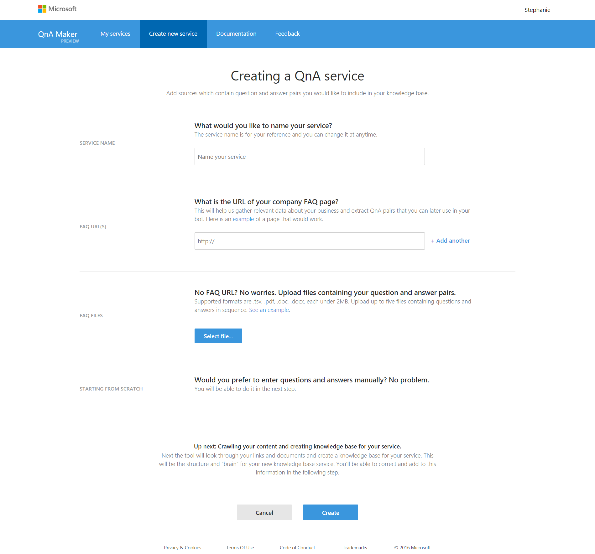
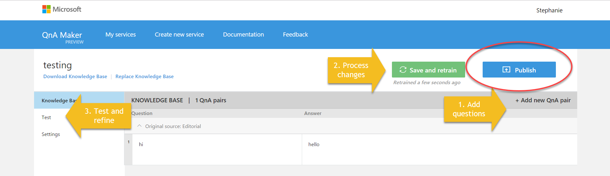
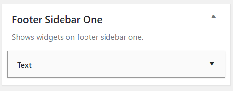

Everyone seems to have a live chat option for their site but I’m frequently away, so I wanted something that people could talk to interactively. This is a perfect scenario for a Q&A bot. Microsoft takes a ton of the pain out of Q&A bots, and it was much easier than I thought to get it added to my WordPress blog. Here is a how to do it for your site.
Prerequisites
A login for Microsoft services
An Azure subscription <-Did you know you can get free credit through their Dev Essentials Program?
A willingness to follow some documentation as instructions might change over time
Getting started – Q&As
The first thing we need is our Q&A service. Microsoft make this trivial with their site qnamaker.io.
You may need to go through the Create an App process when you first use it. This will hook up to your Azure account, so make sure you’ve already got a working subscription but it simply gets you some keys.
You can have QnA Maker scrape an FAQ page, upload some FAQs, or write your own. <- Don’t worry you can add to them later!
Q&A bot starter page
Add utterances and responses to your Q&A bot
Save and train your bot
Give the bot some testing (you can use this an easier way to add additional ways of saying questions)
Re-save if you make changes
Hit publish
Q&A bot development process
This gives you a Q&A webservice but it’s not quite a bot.
Add a new Bot Service. You’ll need to give it a name and set which region you want to host it in. It will then setup everything in the background, and takes a couple of minutes.
Once it is successfully deployed, navigate your bot service and Create an App, making sure to copy and paste the values from the new tab into the interface. Select the Q&A Bot type. It should bring up a poppup that allows you to select your bot from a dropdown.
Bot Service setup
Once it’s deployed – you can run away from all that code!
Hop over to botframework.com to manage your bot. Fill in info like a logo and a description.
Put the bot on Skype
The easiest way of getting the bot on WordPress is to wrap it in the Skype web control. This is again a no-code required activity.
We can easily grab the Skype bot embed code from the Bot Framework site but I preferred using a tool that allowed me to theme my Skype tool. Before we get to the customisation, navigate to your bot’s settings and grab it’s ID.
Hopefully, you have a theme with a footer that supports widgets. This make it super easy to add your Q&A Bot, if not you can use widgets elsewhere or add the code to your theme.
Go to the Widgets area of you Admin site (or do live customisation) and select a Text widget and drag into a footer widget area.
Add a Text Widget
Now paste in the code from the Skype Web Control generator and Save!
Final result
This gives us a floating button on our WordPress blog that allows people to ask questions and get responses back. We can continue to improve our Q&A bot over time, and I need to work on boosting the bot’s cleverness by utilising LUIS, but I wanted to show you how you can get something pretty darn clever without writing a single line of code. The nifty thing is that it’s entirely free for under 10,000 transactions per month and super cheap after then. Have a play on my site and let me know if you make your own bot!
PS Many thanks to Galiya, a fab Bot lady at Microsoft, who pointed me in the right direction for the skype control!